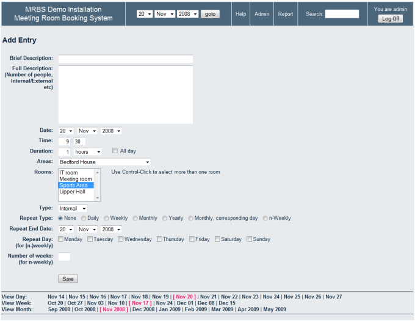

Intro

Bonjour, je suis Amir SAID, étudiant en deuxième année de BTS SIO (Services Informatiques aux
Organisations), option SLAM (Solutions Logicielles et Applications Métier) à l'ICOF à Lyon. En 2022,
j'ai décroché mon baccalauréat général S avec une mention Assez Bien, ce qui m'a conduit à
poursuivre mes études dans ce domaine passionnant.
J'ai choisi cette formation car j'ai une passion pour la programmation et elle offre de nombreuses
opportunités pour la poursuite de mes études. Dans ce cursus, nous étudions différents langages tels
que le PHP, le C#, le Java, le JS, ainsi que l'administration de bases de données, les méthodes de
travail en mode projet et
l'autoformation.
Mon objectif est de continuer mes études en alternance jusqu'à l'obtention d'un BAC+5.
Projets

Projets Premier Bloc (Commun aux deux spé du BTS):
Voici une compilation des projets réalisés pendant le premier bloc de notre formation, qui est un
support commun à l'ensemble des étudiants. Les projets présentés ici ont été spécifiquement conçus
pour nous aider à développer nos compétences et nos connaissances dans le domaine d'étude choisi:
Installation et configuration d'un serveur LAMP
AP Réseau : Semestre 1
Création de deux machine
virtuel,
client et serveur, et installation de WinSCP, PuTTY, Apache, PHP5, un serveur SQL MariaDB puis
la migration d'un site Wordpress pour obtenir un serveur LAMP fonctionnels.
J'ai appris à installer une VM et à la configurer mais aussi toutes les commandes de base.
Développement d'un site web en html5/css3
AP Web : Semestre 1
Création d'un site web
dynamique pour
une école de musique en HTML/CSS à l'aide du modèle d'un autre site. Le site est alimenté par une
base de données SQL. J'ai appris comment récupérer les données SQL grâce à des requêtes pour
permettre à un site de s'afficher.
MISE EN PLACE D'UNE INFRASTRUCTURE TECHNIQUE
AP Réseau : Semestre 1
J'ai entrepris la création et
la
configuration d'un environnement informatique virtuel comprenant à la fois des postes de travail
fixes et des ordinateurs portables, tout en ajoutant un serveur DNS à l'aide de l'outil Cisco Packet
Tracer.
Grâce à ma prise en main du logiciel Cisco Packet Tracer, j'ai acquis la compétence nécessaire pour
configurer avec succès des postes de travail en tandem avec un serveur DNS.
Gestion de parc informatique
AP Support: Semestre 2
 J'ai géré un parc
informatique en
suivant le MOOC Open Classroom 'Gérez votre parc informatique avec GLPI' . J'ai installé un
serveur GLPI et configuré l'outil FusionInventory. Ensuite, j'ai réalisé des tests pour
approfondir ma compréhension de la gestion de parc informatique.
J'ai géré un parc
informatique en
suivant le MOOC Open Classroom 'Gérez votre parc informatique avec GLPI' . J'ai installé un
serveur GLPI et configuré l'outil FusionInventory. Ensuite, j'ai réalisé des tests pour
approfondir ma compréhension de la gestion de parc informatique.
Gestion des incidents
AP Support: Semestre 2
AP Support: Semestre 2
J'ai eu l'opportunité de pionner la mise en œuvre d'un système de gestion des incidents au sein
d'une entreprise. Il convient de noter que les tickets sont classés selon différents niveaux de
priorité. J'ai ainsi eu l'occasion d'explorer en profondeur la manière dont les demandes sont gérées
au sein de l'entreprise. Par la suite, nous avons collaboré en binôme pour créer un ticket fictif et
résoudre cette situation, ce qui a été une expérience enrichissante.
Migration et tests
AP Support: Semestre 2

J'ai déployé avec succès
l'application web MRBS, qui permet de réserver des salles, sur un serveur LAMP. J'ai réalisé cette
installation à la fois sur un système Debian Jessie et sur un système Debian Buster, et j'ai
également effectué une migration des données pour passer de la première version à la seconde.
Projets Option SLAM:
Sur cette page, vous trouverez une compilation des projets réalisés dans le cadre de l'option SLAM,
qui se concentre principalement sur le développement web et la programmation. Les projets présentés
ici ont été spécifiquement conçus pour nous permettre d'approfondir nos compétences dans ces
domaines clés.
CRÉATION D'UNE INTERFACE GRAPHIQUE DE GESTION POUR LA COMPAGNIE OCÉANE
AP Programmation Objet / Interface
Conception de l'interface et
des
fonctions pour la gestion des bateaux et de leurs traversées. Récupération des données de la base de
données, affichage via des outils graphiques dans des onglets distincts, et implémentation de
fonctionnalités de filtrage, d'ajout, de suppression et de modification des données.
RECONSTRUCTION D'UN SITE EN ARCHITECTURE MVC
AP Web
Nous avons repris un
site de
la
compagnie Océane et l'avons migré vers une architecture Modèle Vue Contrôleur (MVC). Ce projet,
réalisé en collaboration par trois personnes à l'aide de GitHub, nous a permis de développer nos
compétences en gestion de projet.
CV
Mon curriculum vitae (CV)
Synthèse E4
Moocs & Certifications
Stages
TimTech
Développement PHP 8 Janvier -
23 Février 2024
J'ai réalisé mon stage au sein de l'entreprise TimTech, où j'ai principalement codé en PHP pour
développer des solutions sur mesure répondant aux besoins spécifiques des clients.
 Attestation de Stage
Attestation de Stage
Kampus-training Développement site
vitrine 15
Mai -
23 Juin 2023
J'ai réalisé mon stage au sein de l'entreprise Kampus-training, où j'ai principalement utilisé le
logiciel WordPress.
Attestation de Stage
Veille Technologique
Voici ma veille technologique qui porte sur l'IA appliquée à la médecine
 Veille Technologique
Veille Technologique
Contact